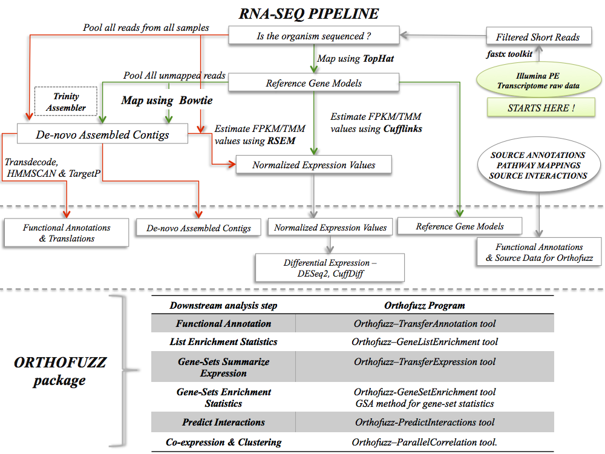

Overview:
The Orthofuzz package positions contigs assembled de-novo from RNA-Seq short read data among protein sequences obtained from phylogenetic neighbors of the target organism in a muti-organism pairwise sequence similarity network.
A set of well annotated organisms in the phylogenetic neighborhood of the target organisms are handpicked and an All vs All BLAST carried out on translated contigs and amino-acid sequences to define an All vs All pairwise sequence similarity network with the sequences forming the nodes and the BLAST bit-score used to define the edge weight (higher the bit-score, higher the homology).
The package includes a series of java programs which uses a combination of network topology and edge weights to annotate, analyze and summarize the RNA-Seq data.
Where does Orthofuzz fit into the RNA-Seq Bioinformatics Pipeline ?

Key terms used in the descriptions:
source organisms: organisms, the annotations of which are used as sources of functional annotations.
source sequences: sequences from the source organisms.
target organism: the denovo sequenced organism, which we are analyzing.
target sequences: sequences from target organisms.
G: The All-vs-All Pairwise Sequence Similarity Network.
Node: A sequence in the pairwise-sequence similarity network.
List of External Packages used:
JUNG Paralellcolt
Trove
Jblas
ClusterOne
Output formats compatible with:
Cytoscape3
Pathvisio
ClusterOne
Genepattern
Programs in the package:
(Click on names in BLUE to get detailed descriptions and download links)
RandomWalkwithRestart.jar
TransferAnnotations.jar
TransferExpression.jar
PredictInteractions.jar
Previous work has shown that functional ortholog proteins tends to share more neighbors with higher edge weight when compared to weak homologs
in All-vs-All pairwise sequence similarity networks. Edge weigted random walk with restart is a memory efficient and fast computational method for capturing both shared topological neighborhood and high edge-weight in a [0-1] score, thereby making it a very useful tool for measuring orthology between sequences and/or sets of sequences.
Given a set of query nodes and an All-vs-All pairwise sequence similarity network, RandomWalkwithRestart.jar reports a cluster of nodes in the network, which are members of or/and homologous to the query set, provide global and organism normalized scores representing the strength of homology of the node to the query-set and statistical significance obtained by permulation test.
The query-set can have a single node or a set of nodes from the same and/or multiple organisms, whose sequences are in the network. This facilitates querying the network for homologs of gene families with one or more members from different source organisms in the network.
The max normalized orthoscore [0-1] returned for each member node of the cluster is a strong indicator of functional orthology. The RandomWalkwithRestart, therefore is a very powerful tool for [1] transferring functional informations we know about the query sets to the cluster members or for [2] summarizing information we know about the cluster-members to estimate summary statistics for the query-set.
[1] Transferring information from query sets to cluster members:
The standard approach for assigning functional annotations to denovo assembled sequences is based on the observation that there is a high probability for cross organism orthologs to share biological function. Previous work has shown that true orthologs tend to share
more neighbors with high edge weights. Since orthoscore captures this information, we can use the orthoscores for transferring functional annotations associated with the source sequences in the networks to the target sequences.
Given the source sequences and their functional annotations, TransferAnnotations.jar method will transfers functional annotations from the source sequences to the target sequences.
If a gene X is known to interact with gene Y in one/many of the source organisms, PredictInteractions.jar can use the RandomWalkwithRestart.jar to identify corresponding orthologs in the target organisms and predict possible contigs/sets of contigs which could be coding for proteins which interacts with each other in the target organisms. It generates output which can for input to clusterOne which can identify possible interaction complexes in the target organisms.
3. Given mappings to genes in source organisms to enzymes and pathways, TransferExpression.jar method will find homologs of the query sets in the new organisms, summarize gene expression values for each query. The GeneSetEnrichmentStats.jar will generate gene-set statistics using Fisher’s method for combining p-values from gene-sets.
4. Given a list of contigs, GeneListStatistics.jar will generate gene list statistics of lists of contigs to identify functional annotation terms enriched in lists of contigs. The enrichment statistics are estimated using EASE scores, which is a modified form of Fisher Exact Test for enrichment.
6. Better strength to this prediction can be obtained by finding interaction-units that are correlated with each other. ParalellCoexpression.jar Estimates pearson correlation of expression data using paralellColt java package.
7. FindRepresentativeCliques.jar finds clusters in the network, first by finding representative cliques in the network and then running NetworkFlow.jar to find weak members of the clusters.
The program parameters
Click here to see how to use the programs
Overview of the workflow:
1. Preparing the input files
The different input files needed for the programs have to be in delimited text files in specified formats.
The input file formats are detailed here.
2. Run NetworkFlow program to estimate the strength of homology between the source and target sequences.
3. Run the TransferExpression program to estimate the representative expression levels for query gene sets from the complied pathways.
4. Run the TransferAnnotations program to transfer the annotations from the source sequences to the target sequences.
5. Run the TransferInteractions program to estimate evidence for the presence and strength of protein interactions of the source organisms in the target organisms.
6. Run Coexpression program on the expression of the interaction data to identify interaction units that are co-expressed.
10. Run NetworkAND program to identify protein complexes that are interacting and are co-expressed in the target organisms.
11. Run Coexpression program on the pathway expressions to identify enzymes and pathways that are co-expressed.
Input formats
Key concepts [Manuscript under preparation]:
1. The fragmented nature and the high identity between sub-groups of the contigs make the current approach of assignment of contigs to the best hits in the source organisms [Table X] error-prone [Figure X].
2. Protein sequences from the same gene family share more neighbors with higher edge weights compared to those that just share functional domains [Figure X].
3. Random walking with restart on an edge-weighted network captures high edge weights and topological neighborhood to give probabilistic definition of network neighborhood [Figure X].
There are five algorithms at the core of the package [Refer Manuscript]:
1. Random walk with restart on an edge weighted network starting from a set of start nodes.
2. Estimate summary expression value of the topological neighbors of a set of nodes.
3. Transfer functional annotations from source organisms to target organisms.
4. Transfer interactions from source organisms to the target organisms.
5. Modified Tomita Algorithm to identify representative cliques in sequence similarity networks.
Statistics
1. Edge Weighted Random Walk with restart using perambulation statistics
2. Permutation Statistics using max mean statistic
3. EASE Score for gene list
4. Fishers Gene Set Stat
5. Max mean stat for Gene Set Analysis
The software was developed in JAVA on GNU/Linux operating system with support for multithreading. It is free for noncommercial use.

{kind=link}